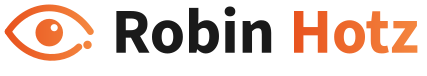
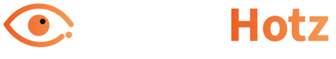
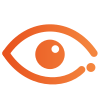
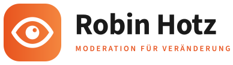
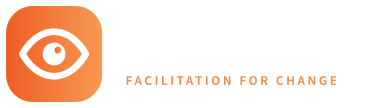
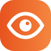
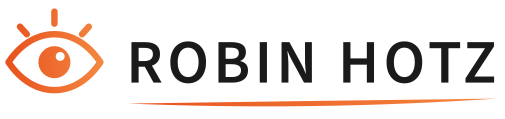
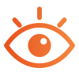

Klarblick
Das ruhigste der drei. Ein Auge aus zwei klaren Bögen, das untere Lid endet offen in einem Punkt, wie im heutigen Logo. Der Name steht wie die Überschriften der Website: „Robin“ dunkel, „Hotz“ im orangen Verlauf.



Stärken
- modern und ruhig, wirkt wie aus einem Guss mit den Headlines
- der Punkt am Lid erinnert an das alte Logo
Zu bedenken
- das Zeichen allein ist bei 16 px eher fein
Fokus
Das Auge sitzt als weiße Form in einer orangen Kachel mit runden Ecken. Daneben der Name in Fett und darunter die Zeile „Moderation für Veränderung“ im Stil der Eyebrows der Website. Funktioniert als App-Icon, Favicon und Profilbild.



Stärken
- am besten erkennbar in klein (Favicon, LinkedIn, Folien)
- Unterzeile auf Deutsch und Englisch vorhanden
Zu bedenken
- die Unterzeile ist im Menü sehr klein, dort eventuell nur Kachel und Name
Weitblick
Die nächste Stufe des heutigen Logos. Auge mit drei Strahlen, Name in Großbuchstaben und der orange Strich darunter, aber alles in klaren Linien statt Handschrift. Wer das alte Logo kennt, erkennt es sofort wieder.



Stärken
- kleinster Bruch zum heutigen Auftritt
- Strahlen und Strich bleiben als Wiedererkennung
Zu bedenken
- wirkt etwas verspielter als A und B